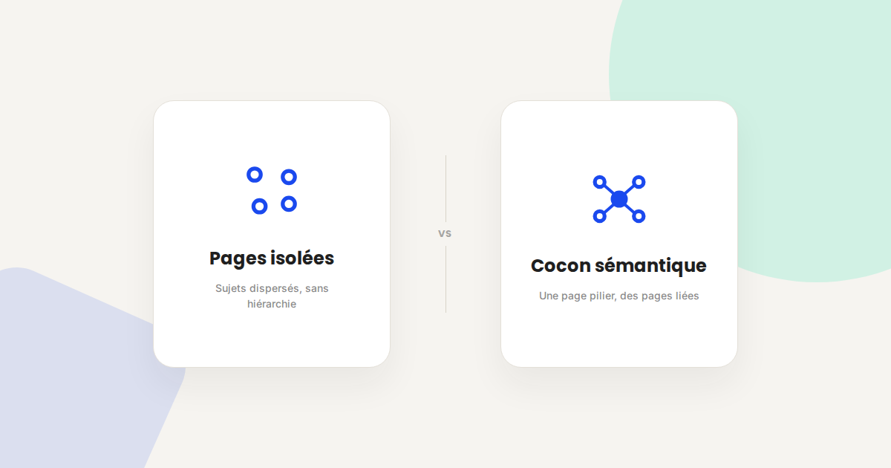
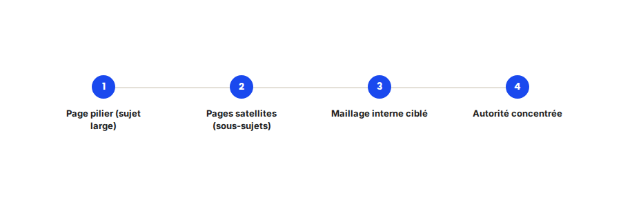

Cocons sémantiques : la méthode pour structurer un site qui se positionne
Un site avec 50 pages qui traitent chacune un sujet différent, sans hiérarchie ni maillage logique entre elles, a beaucoup plus de mal à se positionner qu'un site organisé en cocons sémantiques clairs. Ce n'est pas une question de quantité de contenu — c'est une question de structure.

Dans les audits SEO que je mène, je trouve régulièrement des sites avec un volume de contenu correct mais un positionnement décevant : le problème n'est pas la quantité, c'est l'absence de structure entre les pages. La méthode des cocons sémantiques, popularisée en France par Laurent Bourrelly, reste une des façons les plus efficaces de corriger ce problème.
Ce qui ne change pas
Le principe reste identique depuis que la méthode existe : organiser un site autour de pages piliers larges, elles-mêmes alimentées par des pages satellites plus précises, reliées par un maillage interne cohérent et non aléatoire. Ce n'est pas un algorithme spécifique de Google qui récompense les cocons — c'est une logique de clarté qui aide autant les moteurs que les visiteurs à comprendre la structure du site.
Ce qui change vraiment dans la mise en pratique
- Le maillage interne doit rester cohérent avec l'intention de recherche, pas simplement dense. Lier deux pages parce qu'elles partagent un mot-clé, sans lien logique pour le lecteur, envoie un signal plus faible qu'un lien qui répond à une vraie continuité de lecture.
- Les pages satellites doivent rester suffisamment différenciées entre elles. Un piège fréquent : créer plusieurs pages satellites qui traitent en réalité la même intention de recherche sous des angles trop proches, ce qui dilue l'autorité au lieu de la concentrer.
- La page pilier doit rester la porte d'entrée principale du maillage externe. Les liens entrants (netlinking, mentions) doivent être orientés en priorité vers la page pilier, qui redistribue ensuite l'autorité vers les pages satellites via le maillage interne.
- La structure sert aussi la lisibilité pour les IA génératives. Un site organisé clairement en thèmes facilite l'extraction d'une réponse cohérente par un modèle de langage, qui peut plus facilement identifier quelle page fait référence sur quel sous-sujet.

Un exemple qui illustre bien la différence
Sur ce site même, l'organisation en 7 pages piliers (SEA, SMA, SEO, GEO, Mobile Marketing, Analytics, CRO) et 15 sous-pages spécifiques, reliées entre elles par un maillage explicite, suit exactement cette logique : chaque sous-page comme celle-ci renvoie vers sa page pilier de rattachement, et vers les sous-pages connexes qui répondent à des questions proches mais distinctes — plutôt que de créer une page isolée de plus, sans place claire dans la structure globale.
Ce qu'il faut faire concrètement
- Cartographiez vos pages existantes par thème avant de créer du nouveau contenu : identifiez les pages piliers naturelles et les pages satellites qui devraient s'y rattacher.
- Vérifiez qu'aucune page satellite ne cannibalise sa page pilier sur la même intention de recherche — chaque page doit répondre à une intention suffisamment distincte.
- Ajoutez des liens contextuels dans le corps du texte, pas seulement dans un bloc de liens en bas de page : un lien en contexte, avec une ancre descriptive, a plus de valeur qu'un lien générique.
- Orientez le netlinking externe vers les pages piliers en priorité, pour maximiser la redistribution d'autorité vers l'ensemble du cocon.
FAQ
Un cocon sémantique nécessite-t-il beaucoup de pages ?
Pas nécessairement au démarrage : un cocon peut commencer avec une page pilier et 3 à 4 pages satellites bien choisies, et s'enrichir progressivement plutôt que d'être créé d'un coup.
Le maillage interne suffit-il sans netlinking externe ?
Le maillage interne structure l'autorité déjà présente sur le site, mais ne la crée pas. Le netlinking externe reste nécessaire pour apporter de nouveaux signaux de confiance depuis l'extérieur.
Comment savoir si deux pages se cannibalisent au sein d'un cocon ?
Vérifiez dans Search Console si les deux pages apparaissent sur les mêmes requêtes avec des positions qui s'alternent dans le temps — c'est souvent le signe d'une cannibalisation à corriger en différenciant mieux leur angle.
Envie de structurer l'architecture SEO de votre site ?
Pour aller plus loin, voir la page SEO, la page Données structurées, et la page Netlinking en 2026.
Pour continuer sur ce sujet.